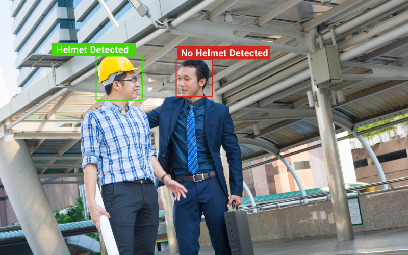
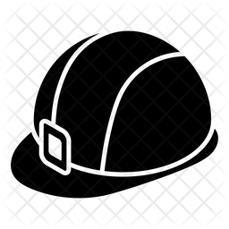

Deteccion
Uso de un modelo entrenado YOLOv8 para detectar cabezas humanas con y sin cascos
Alarma de peligro
Activacion de alarma si se detecta alguna cabeza humana sin casco, determinando peligro
Notificacion
Notificacion al administrador si se detecta alguna cabeza humana sin casco